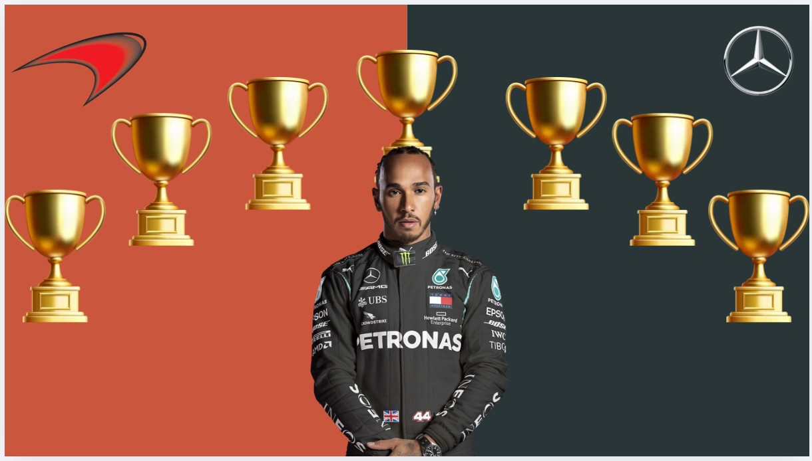
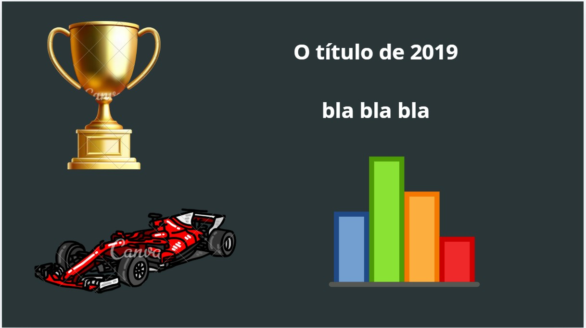
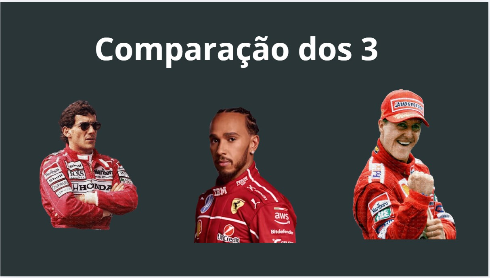
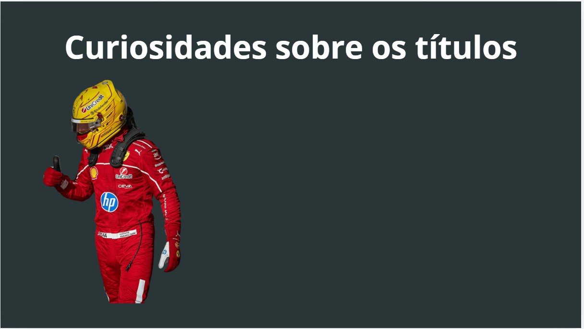
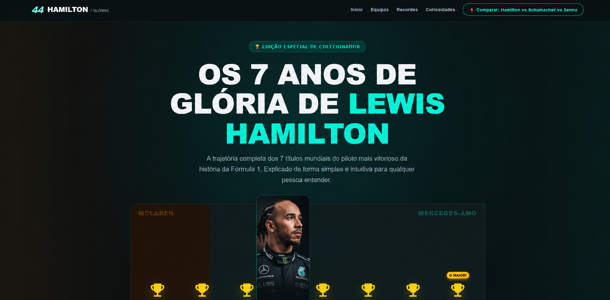
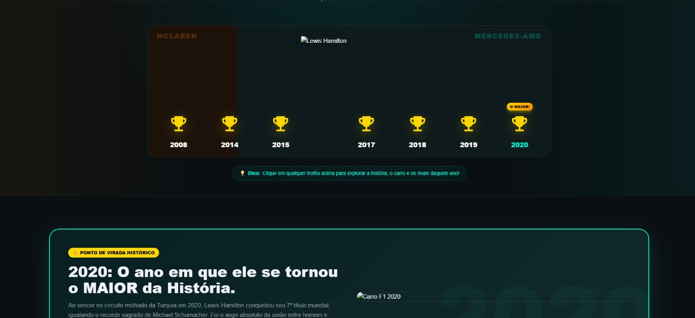
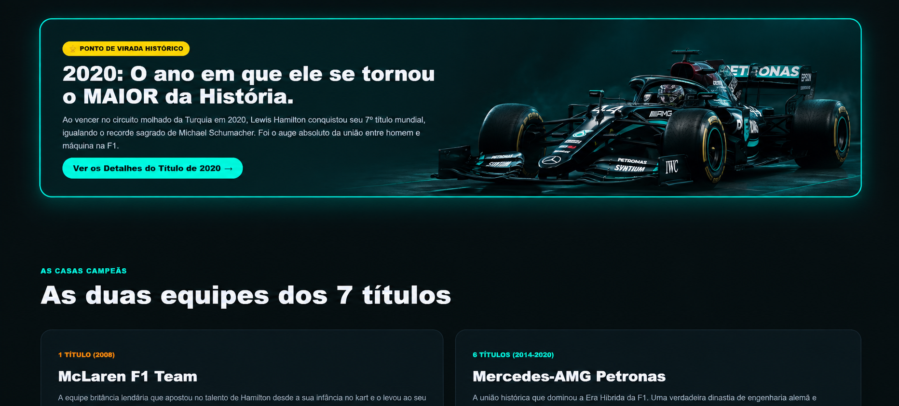
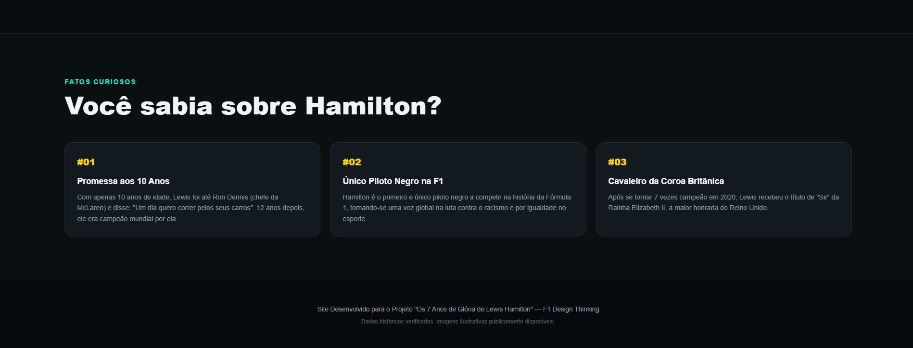
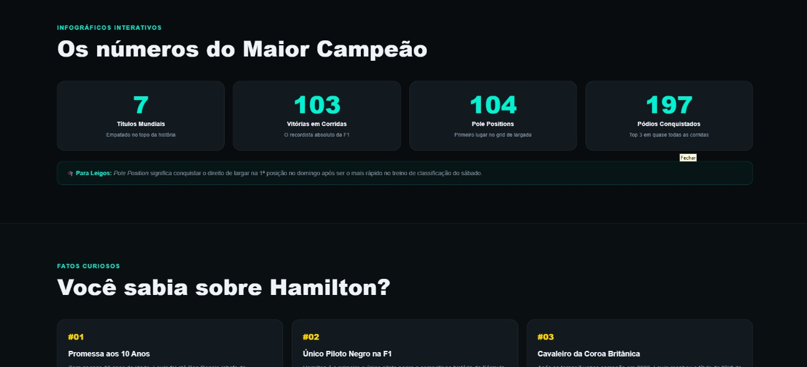
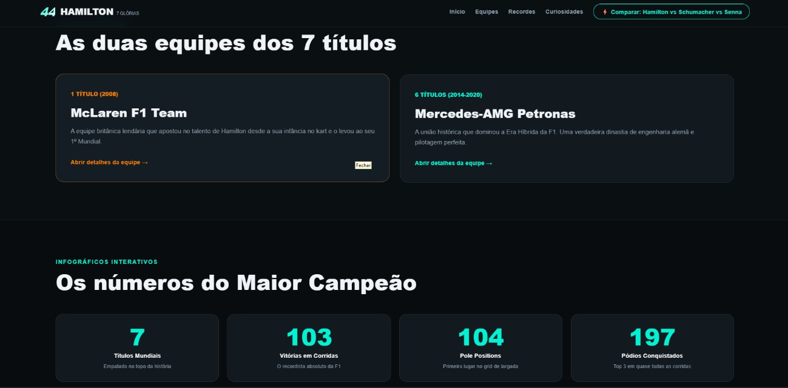

O que é Desing Thinking
O Desing Thinking é uma abordagem e mentalidade centrada no ser humano, para resolver problemas complexos de forma criativa e inovadora. Ele baseia-se em 5 módulos de processo que são: Empatia, Definição, Idealização, Prototipagem e Teste.
Os módulos da abordagem
Empatia
A empatia é a parte onde há a compreensão as pessoas, suas necessidades, sentimentos e desafios por meio de observação, conversas e imersão no contexto delas.
Definição
A definição é onde há a organização das informações coletadas durante a etapa de Empatia. Análise das observações para definir os principais problemas que identificados até o momento. A definição do problema e a formulação do problema devem ser feitas de maneira centrada no ser sempre no ser humano.
Idealização
O objetivo da idealização é explorar um espaço amplo de soluções, tanto em quantidade quanto em diversidade de ideias. A partir desse vasto repertório de ideias, se constrói os protótipos para testar com os usuários.
Prototipagem
Prototipar é tirar as ideias do papel e coloca-las no mundo. Esta é a fase experimental, cujo objetivo é identificar o melhor protótipo para cada um dos problemas identificados durante as três primeiras etapas . Serão produzidos muitos protótipos, e um a um, que na próxima fase serão julgados com base na experiência dos usuários.
Teste
Testar é o momento de coletar feedback, refinar soluções e continuar aprendendo sobre seus usuários. O modo de teste é um modo iterativo, no qual você coloca protótipos de baixa resolução no contexto apropriado da vida do seu usuário. E com base nos feedbacks os protótipos são aprimorados ou descartados.
Técnicas e Ferramentas
Braimstorm
Brainstorming é um momento delimitado no tempo em que a equipe amplifica o modo "gerativo" do pensamento e suspende o modo "avaliativo". A meta é alavancar o pensamento coletivo do grupo, e a técnica pode ser usada em qualquer etapa do processo de design thinking — não só na ideação, mas também para planejar entrevistas de empatia ou avaliar soluções.
How Might We
Perguntas curtas usadas para disparar uma sessão de brainstorm. Devem ser amplas o suficiente para abrir várias soluções, mas específicas o suficiente para dar direção — nem "Como poderíamos redesenhar a sobremesa?" (muito genérico) nem "Como poderíamos criar um sorvete que não pingue?" (muito estreito). O documento recomenda partir do desafio de design e da declaração de ponto de vista (POV), e sugere variações como: aliviar uma tensão, explorar o oposto, questionar uma suposição, criar uma analogia ou mudar um status quo.
Stoke
Atividades curtas e físicas para "ligar" o grupo mental e fisicamente antes do brainstorm (ex.: jogos como "Categoria, categoria, corta!" ou "Bola de som"). Servem para gerar energia antes da sessão gerativa.
Yes, And!
Técnica estruturada para brainstorms que ficam caóticos ou excluem pessoas mais introvertidas. Funciona assim: alguém escreve uma ideia "revolucionária" no quadro; cada membro escreve em um post-it uma abordagem nova para realizá-la; depois, em rodadas, cada pessoa constrói sobre a ideia dizendo "sim, e..." antes de contribuir — garantindo que todos construam sobre todas as ideias pelo menos uma vez.
Site sobre o Lewis Hamilton.
Aqui está um projeto, no qual foi utilizado a abordagem "Desing Thinking". Onde nosso cliente queria um site sobre o piloto de fórmula 1 Lewis Hamilton.
Empatização
Nessa etapa, a equipe assumiu o papel do próprio usuário final do site — alguém que nunca ouviu falar de pilotos, corridas ou carros de Fórmula 1 — para entender, na prática, o que essa pessoa precisaria ver e sentir ao navegar pelo projeto.
Por vias de fato, assumimos a função de usuários que acessam o site sem nunca ter ouvido falar sobre pilotos, corridas e carros. Colocar-se nesse lugar foi essencial para guiar as decisões seguintes: se a equipe validasse o site apenas com o próprio conhecimento técnico sobre F1, corria o risco de criar uma experiência elitizada, cheia de jargões e siglas que afastariam justamente o público leigo — que é o público-alvo definido pelo próprio cliente.
Essa imersão revelou uma tensão central do projeto: o cliente queria profundidade técnica (especificações de motor, potência, recordes) e, ao mesmo tempo, acessibilidade total para quem não entende nada do assunto. Essa tensão se tornou o principal critério de design nas etapas seguintes — o site precisava ser interativo e intuitivo o suficiente para que um "leigo completo" conseguisse entender a grandeza da carreira de Hamilton sem se perder em termos técnicos, mas sem abrir mão do rigor das informações para o público que já entende do assunto.
Entrevista
pensando se coloco a entrevista
Definição
Depois de imersos no ponto de vista de um usuário leigo e de reunir os requisitos do cliente, a equipe sintetizou as informações em uma declaração de problema (Point of View) e em perguntas norteadoras, que guiaram todas as decisões tomadas na etapa de Ideação.
Cruzando a Imersão com as respostas da Entrevista, identificamos três necessidades centrais que o site precisava resolver ao mesmo tempo:
Acessibilidade: o usuário não entende de Fórmula 1, então o site precisa comunicar grandeza e conquistas sem depender de conhecimento prévio.
Profundidade técnica sob demanda: o cliente quer dados reais (especificações de carro, recordes, estatísticas), mas eles não podem intimidar quem está só curioso.
Narrativa emocional: o cliente insistiu em "foco narrativo" e destacou 2020 como o ano simbólico — ou seja, o site não deveria ser apenas uma tabela de dados, e sim contar uma história de superação e legado.
Ideação
A partir da entrevista e da imersão, a equipe converteu os requisitos do cliente em um projeto de design e conteúdo concreto: "Os Sete Anos de Glória".
Página 1: "A Jornada dos Títulos (Home Interativa)"
Paleta de cores: preto e vermelho dominando a interface, simbolizando as duas equipes icônicas pelas quais o piloto conquistou seus campeonatos mundiais (McLaren e Mercedes), criando um contraste de alta performance, elegância e agressividade nas pistas.
Mecânica de navegação: ao redor de Hamilton, dispostos de forma dinâmica, 7 troféus numerados — cada um funcionando como um portal interativo (modal → rota própria).
Página 2: "O Legado (Curiosidades e Recordes)"
Sugestão do cliente a criação de "fun facts" sobre Lewis Hamilton.
O Maior Vencedor da História: destaque para a marca histórica de vitórias na Fórmula 1, superando a centena de GPs vencidos.
Fora das pistas: impacto de Hamilton na moda, na música, no veganismo e na defesa da diversidade e inclusão no esporte a motor.
O cavaleiro do esporte: a honraria de Sir recebida pela Coroa Britânica, reconhecendo suas contribuições ao esporte e à sociedade. (completei o trecho que ficou cortado — "Coroa Brit...")
Prototipagem




Projeto Entregue






Referências
Design Thinking
STANFORD UNIVERSITY. Stanford d.school: Design Thinking Bootleg.
Stanford University, Institute of Design.
Brainstorming
IDEO. Design Thinking for Educators. IDEO.
How Might We
STANFORD UNIVERSITY. An Introduction to Design Thinking:
Process Guide. Stanford d.school.
Design Thinking e inovação
BROWN, Tim. Design Thinking. Harvard Business Review,
jun. 2008.
Prototipagem
IDEO. Human-Centered Design Toolkit. IDEO.